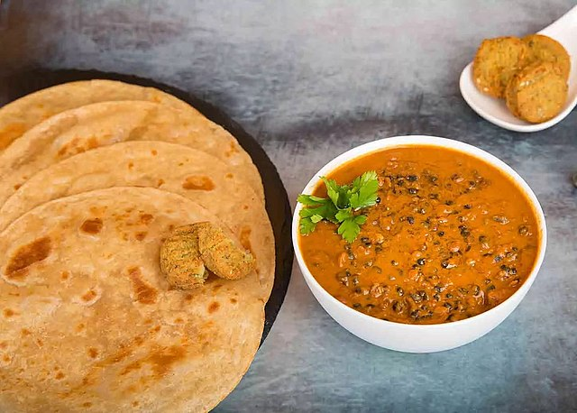

Lentils Plus

It's lentils, plus some other stuff.
What you'll need:
- a whole mess of lentils (sensing a theme here?)
- a substantial volume of chicken stock
- salt
- imma do 3 shallots
- butter, 1 chunk per generous handful of lentils
- or ghee if you're feeling authentic
- garlic cloves, as many as you can tolerate
- grated ginger, but don't overdo it
- white pepper
- lil' bit o' turmeric
- also a lil' paprika
- also a tiny bit o' coriander
- heavy cream, or coconut milk if you're feeling vegan
- tomatoes, at least 2 fist-sized, or canned crushed tomato equivalent
- have a lemon handy
- full fat greek yogurt, one dollop for each bowl
- fresh parsley
- white rice, several hundred grains at least
What you gotta do:
- Cut up the shallots, but like tiny, and while you're at it mince the garlic too
- Rub the ginger quickly. Afterwards pick up the ginger root and shred it with a microplane or whatever you have
- Slap 'dat butter down in 'de dutch oven
- m e l t
- Give the shallots the ol' Richard Simmons (sweat 'em)
- Once they're disturbingly translucent add the garlic and the ginger
- Take a moment to smell this because daaaaaaaaaaaamn
- Congratulate yourself for building INTENSE flavor
- Put in the lentils. Every last one.
- Stir them around in the flavor goo you've just made 'til they are coated and sticky.
- Stir in your tomatoes
- Add the chicken stock and cook it for a long time
- Once the lentils are .exactly. right, add the heavy cream, just enough to give it a thicc body
- Bowl it with some white rice, which you definitely didn't forget to make
- Squeeze a lil' lemon over that
- Give it a dollop of Greek Yogurt(tm)
- Sprinkle fresh parsley
- Mandatory enjoyment
- I know you didn't forget about the spices. You did? OK, start over, but now add the spices when it feels right.
Back to Main Page